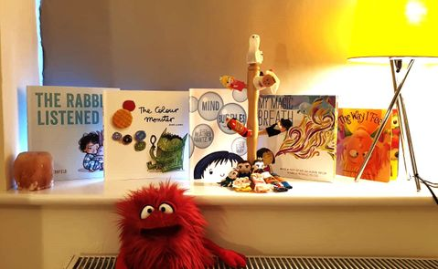
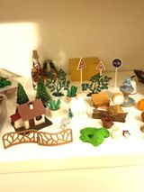
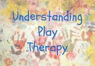
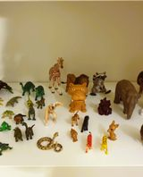

Transforming Lives with Joy and Play
I moved to Ireland in 2008 with my family. I started my studies in 2012 and could not stop since to develop my skills and knowledge in working with children and their families.
As a child, I could call myself lucky to have the opportunity to grow up and learn about the world around me through play. The play helped me deal with the challenges as a child and teenager. My experience, passion, and love for play led me to recognise the influential power of play in children's everyday life that led me to become a play therapist.
Through play, children make sense of their past and cope better with their future. Using the therapeutic powers of play, I help children prevent or resolve psychosocial difficulties and achieve optimal growth and development.
Child and Adolescent Play Therapist
I'm a Child and Teenager, Play therapist passionate about working
with a client-centered approach.
Play is vital for every child's social, emotional, cognitive,
physical, creative, and language development. Through play,
children can make sense of their past and cope better with their
future. Using the therapeutic powers of play, I help children
prevent or resolve psychosocial difficulties and achieve optimal
growth and development.
Possible referral issues that I work with:
emotional or behavioural problems,
communication difficulties,
delayed or uneven development,
learning difficulties,
relationship difficulties (parent/child/peer/ siblings),
family disruptions such as illness or divorce,
grief or loss,
chronic illness/hospitalisation,
bonding and attachment issues,
anxiety,
sadness,
fear,
panic,
worry,
bullying,
low Self-Esteem,
poor play skills.
I have nine years of experience working with vulnerable children
and families, which led me to continue developing my skill set
working with Children, Teenagers and their parents in studying MA
in Creative Psychotherapy.
PG DIP Child and Teenager Play therapy, IAPTP, BA( Hons) EYE.
I have nine years of experience working with vulnerable children and families, which led me to continue developing my skill set working with Children, Teenagers and their parents in studying MA in Creative Psychotherapy.
The Power of Emotional Connection in Parent-Child Relationships
Child and Teenager Play is vital for every child's social, emotional, cognitive, physical, creative, and language development. Through play, children can make sense of their past and cope better with their future.
They may also learn to manage relationships and conflicts in more appropriate ways. It provides the child emotional support while learning to understand more about their thoughts and feelings. The child, through play, communicates with adults nonverbally, symbolically, and in an action-oriented manner.
  I use approaches, interventions, media, and activities appropriate to the client's age and developmental stage. Children in the therapy room enter into a dynamic therapeutic relationship with the therapist that enables them to express themselves, explore and make sense of the world in which they live, and resolve any difficult or painful experiences through the medium of play.
2023-2025-Master of Arts in Creative Psychotherapy (Humanistic & Integrative
Modality)
2020-2022-Post Graduate Diploma in Child and Teenager Play therapy ,
Children's Therapy Center, Mullingar (CTC)
2022-Professional Pre accreditation Child and Teenager Play therapy, IAPTP
2020-Children First, CPD
2020-Speech and Language, Health Service Executive (HSE), CPD
2020-Communicating with People who have an Intellectual Disability, Health
Service Executive (HSE), CPD
2020-Hidden Harm: The impact of parental alcohol and drug use, Tusla - Child and
Family Agency, CPD
2020-PLAY, CHALLENGING BEHAVIOR, AND CONVEYING HOW PLAY IS LEARNING TO FAMILIES
WITH LISA MURPHY, Online Conference Transforming Challenging Behavior,
CPD
2020-How to use conscious discipline strategies in Preschool with Elizabeth
Montero, Transforming Challenging Behavior/ Online Conference, CPD
2020-How to get to the root of even the most difficult Behavior with Dayna
Abraham , Transforming Challenging Behavior/Online conference, CPD
2020-Recovery in Mental Health , Health Service Executive (HSE), CPD
2020-Together Old and Young. Intergenerational learning. International Child
Development Initiatives (ICDI), CPD
2019-Childhood Worries and Anxieties/Workshop , DR Mary O'Kane, CPD
2019-Play Therapy Techniques. Developmentally Appropriate Psycho-therapeutic
Work With Young and Children, Children's Therapy Center (CTC), CPD
2019-Teaching Mindfulness to Children, CPD
2019-Fairy-tales, Music& Play, Creative approaches for working with children and
teenagers, Children's Therapy Center (CTC), CPD
2018-Emotional Well-being in an Early Years Environment, Department of Children
and Youth Affairs (DCYA), CPD
2018-Imagine-Create-Perform. The Art of Puppetry for Early Year's Teachers,
Pobal, CPD
2014-2017-BA (Hons), Bachelor of Arts in Early Childhood Education,
Technological University Dublin (TUD)
2013-2014-QQI Level 6, Early Childhood Care and Education/ Supervision, Dundrum
College of Further Education
2012-2013-QQI Level 5, Early Childhood Care and Education, Dundrum College of
Further Education